山野暖阳 · 四版重设计
按 Bo 的意见重做“山野暖阳”：木质版画的刻线与浮雕（卡片有刻出的边、短而实的投影与高光），背景加细木纹（程序生成的原创纹理），层次拉开；月历里今天用墨色凸起的印章标出，练完 / 练了一部分 / 计划 / 没练分别是实心块 / 下半填色 / 描边 / 虚线；整体降低饱和度与亮度，去掉大面积暖色，减轻久看疲劳。
以下都是真实应用截图（390×844，同一份数据：10 月 12、14、16、19 日练完，18 日练了一部分，今天 10 月 20 日）。最上面是现在的版本，供对比。选定一版后再正式上线。
现在的山野暖阳 对比用
平面、偏亮的暖杏底；月历今天只有一圈看不见的描边，计划日没有标记。
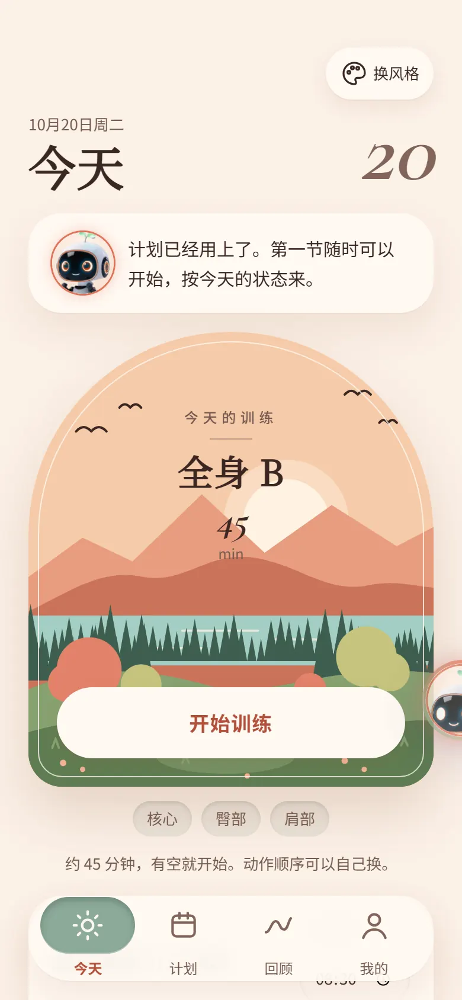
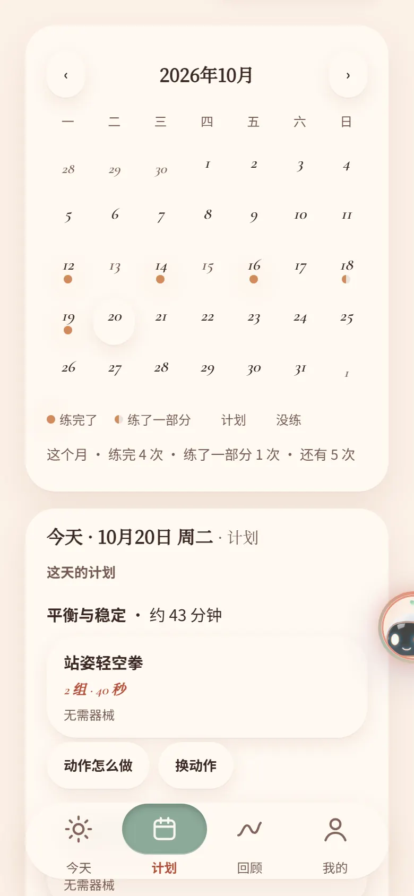
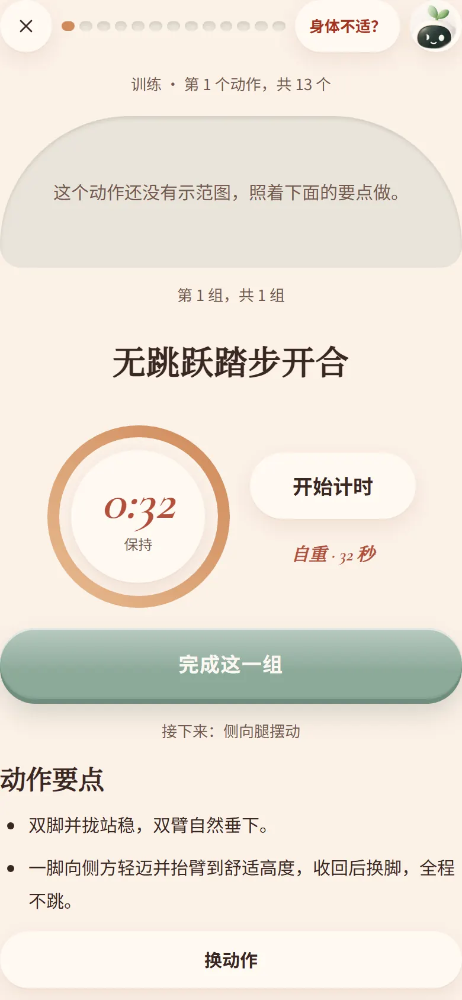
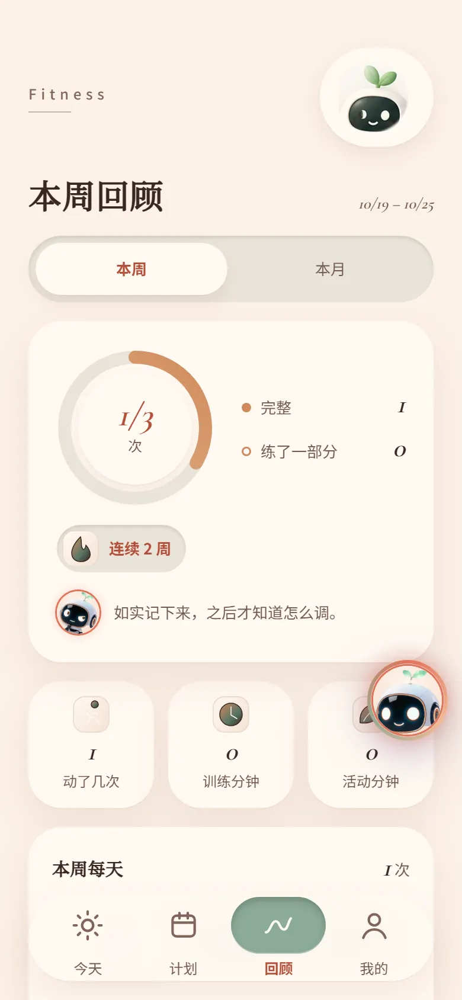
浅色原木 Birch · 浅色
桦木浅底配深墨描边，卡片像刻好的木牌，阴影短而实；整体降饱和、无大面积暖色。
#E6DCCB#F4EDE2#2B2119#3F5E4E#B0603A#C9A06A
对比度（WCAG AA 要求正文 ≥ 4.5）
- 字正文 / 卡片 13.5
- 字次要字 / 卡片 7.6
- 字淡字 / 底色 4.6
- 字强调字 / 卡片 6
- 字主按钮 6.3
- 字今日 13.9
- 字已完成日 5.4
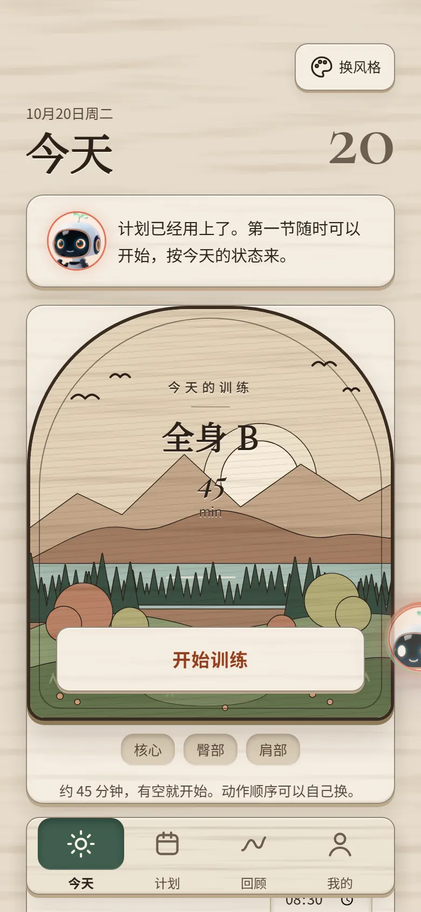
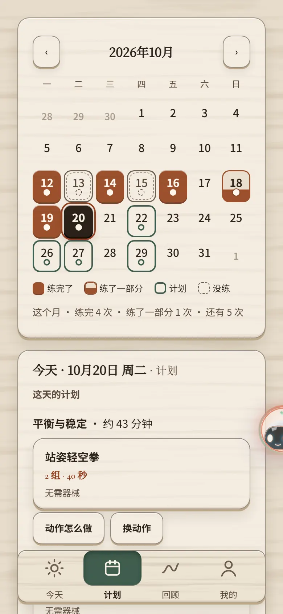
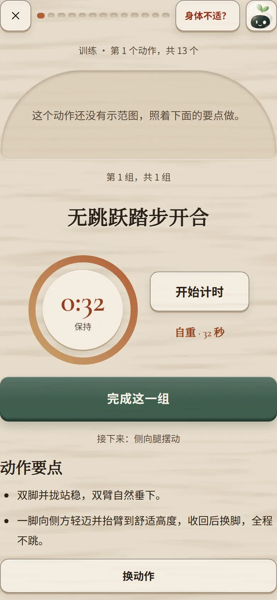
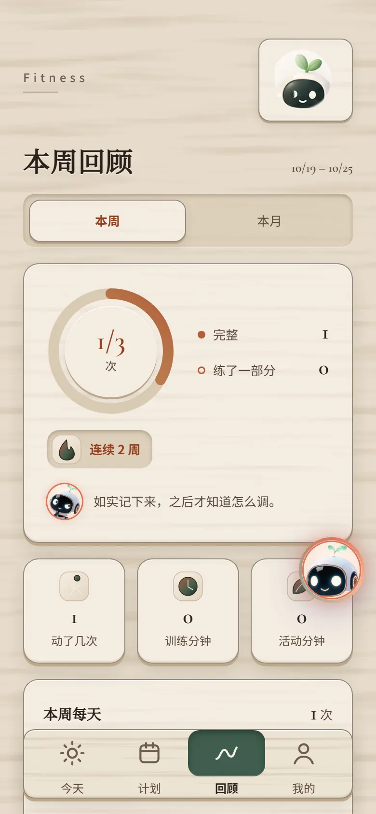
胡桃深木 Walnut · 深色
深胡桃木底、奶油色字，像夜里的木刻；暗而不黑，低眩光，适合长时间看。
#231913#33261D#EDE2CF#A9C2A8#D79E63#8FAE95
对比度（WCAG AA 要求正文 ≥ 4.5）
- 字正文 / 卡片 11.4
- 字次要字 / 卡片 7.5
- 字淡字 / 底色 6
- 字强调字 / 卡片 7.9
- 字主按钮 9.4
- 字今日 14.1
- 字已完成日 7.5
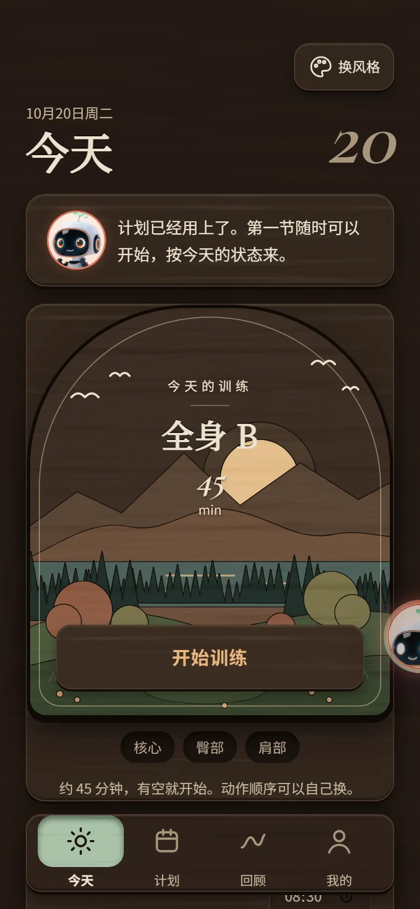
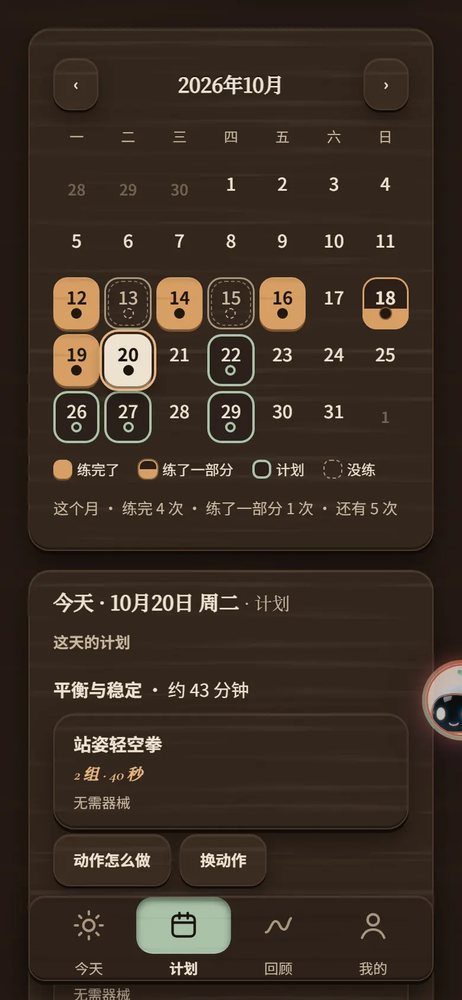
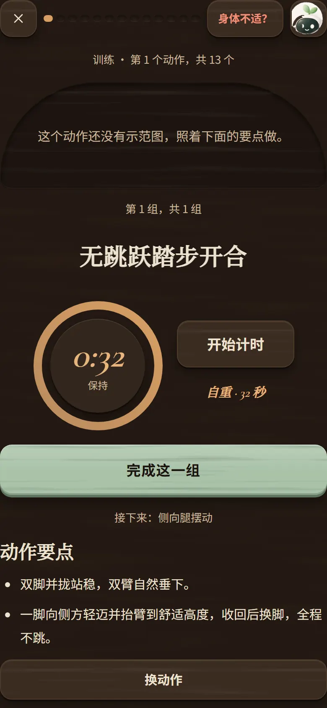
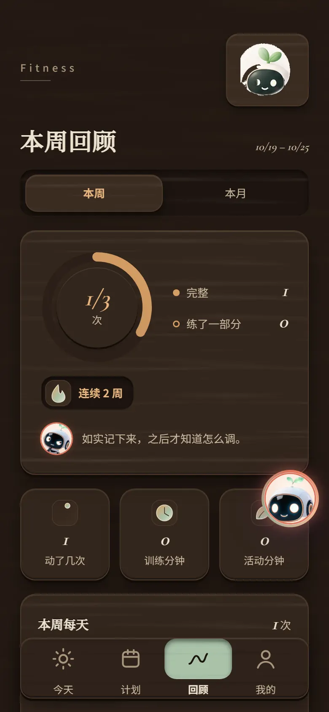
雕版套色 Block print · 浅色
宣纸底、墨黑加朱砂两色套印，边框方正、带一点套色错位；木纹只用在按钮与导航这些“木块”上。
#EEE7D7#F7F2E6#1F1C18#A8341F#6B6258#3E5A73
对比度（WCAG AA 要求正文 ≥ 4.5）
- 字正文 / 卡片 15.2
- 字次要字 / 卡片 8.1
- 字淡字 / 底色 4.9
- 字强调字 / 卡片 5.9
- 字主按钮 13.4
- 字今日 15.2
- 字已完成日 6.1
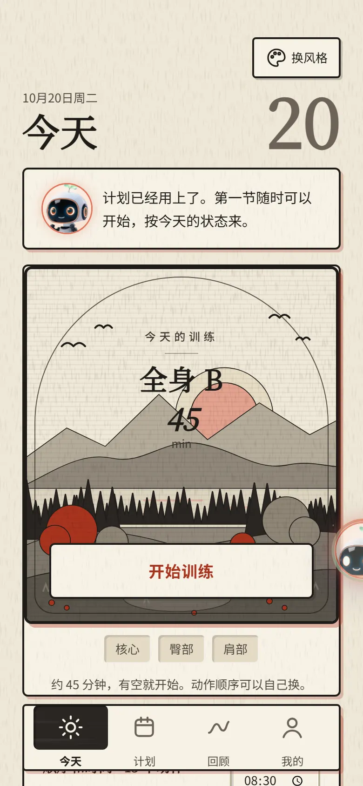
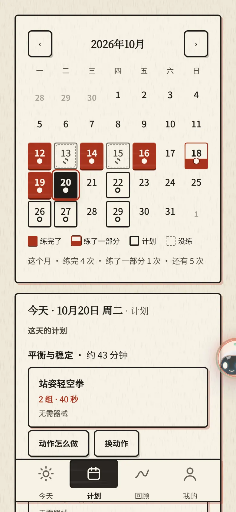
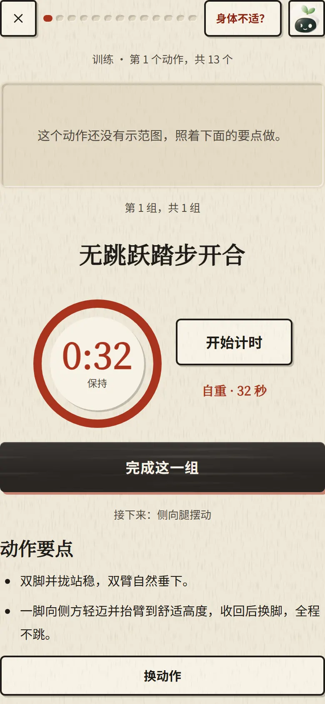
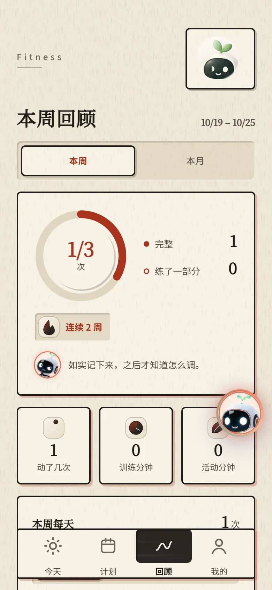
暖阳柔木 Soft sun · 浅色
保留现在的暖杏与鼠尾草绿，但压低亮度和饱和度，加木纹、浅浮雕和清楚的描边，今日和状态一眼可辨。
#F0E2D0#F9F0E4#36241F#4C6A5B#C0764A#E2C0A2
对比度（WCAG AA 要求正文 ≥ 4.5）
- 字正文 / 卡片 13
- 字次要字 / 卡片 7.1
- 字淡字 / 底色 4.9
- 字强调字 / 卡片 5.6
- 字主按钮 5.5
- 字今日 5.5
- 字已完成日 4.9
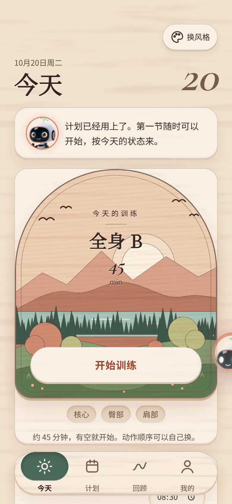
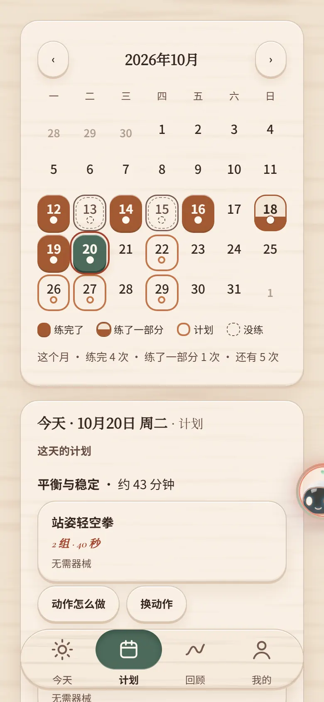
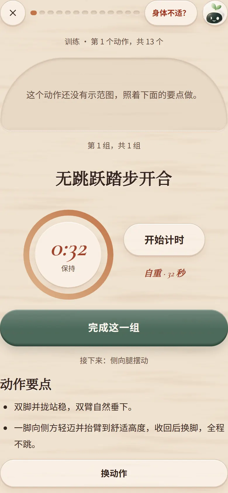
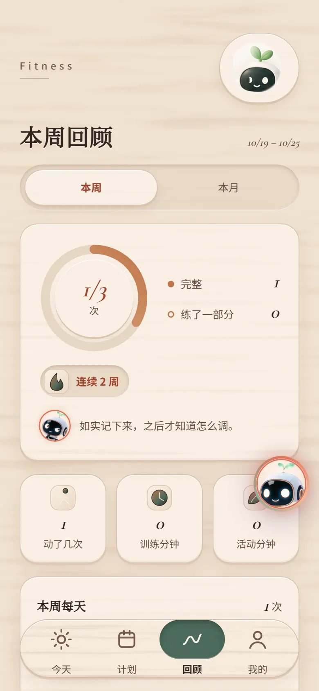